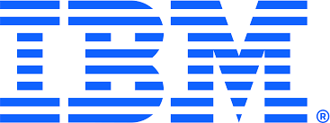

Professional Experience

IBM India Pvt. Ltd.
Client: PNC Financial Services
Oct 2023 – PresentExecuted functional and accessibility testing on rewards features across mobile banking. Automated API testing with Postman/Karate DSL and developed end-to-end test scenarios using Python's FLA Framework. Utilized Sauce Labs and SeeTest for cross-device coverage within Agile sprints.
- Reduced manual validation effort by 50% by automating key user workflows
- Conducted mobile UI & accessibility testing for accounts, loans, and rewards modules
- Automated API validation using Postman and Karate DSL for faster backend service checks
Automated and functionally tested Salesforce-based dispute workflows. Developed Java/Selenium WebDriver scripts for Salesforce Edge components, performing functional, integration, and regression testing.
- Developed automation scripts for Salesforce-based workflows using Java & Selenium WebDriver
- Performed functional, integration, and regression testing to ensure stability
- Managed defects and test cases in JIRA with documentation in Confluence
Performed manual and automated testing for web and mobile applications to validate features before production release. Built and maintained Java/Selenium test scripts to accelerate regression cycles.
- Designed and executed 100+ functional test cases achieving 98% acceptance criteria coverage
- Executed cross-platform testing across multiple devices and browsers
- Used JIRA and Confluence for test tracking and documentation